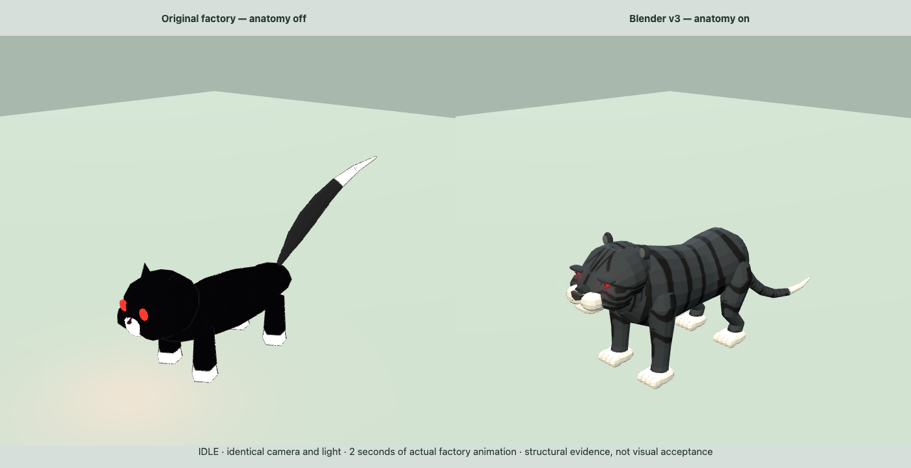

TIGERMESSENGER / LOCAL ASSET FACTORY本地资产生产线
报告生成于 2026-09-09 04:08:48 CST。这是保存的检查点；重新生成报告后刷新页面查看最新结果。
当前交付：可恢复的工程检查执行器已登记 92 项资产/变体，包含复合场景。这里的通过数不表示美术优化百分比，也不表示完整剧情已接入。
目标机器：Mac Studio M5 Max / 64GB（用户提供，尚未连接核验）。
Qwen：未连接 Studio 模型服务
LLaDA-Image：Mac 兼容性待验证，尚未部署
游戏里已经改变了什么
湖沼之虎：Blender 新造型已默认接回原 Web 游戏保留原角色、动作回调和救援身份，修正静止姿态、平面脚掌支撑与眼灯过亮。Godot 已补原作待机尾摆；完整行为迁移仍待完成。

36 项浏览器检查 · 打开大图
未完成：坑内原对答已通过 160 帧正常物理回归；从其他区域连续进入湖沼、整体地形和完整救援仍待验收。
完整场景原始检查 · 失败诊断与后续复测
实际执行记录
缓存复用需要输入和报告哈希一致；相同输入失败两次后停止自动重试。Godot 测试在隔离副本执行；后台 Blender 作业只输出新候选，前台原作保留。
仍需完成
当前按用户要求继续 Astra + Blender + 认可图像参考 + Godot，优先实际区域的动画、碰撞、战争与救援验收。Qwen／LLaDA 接入暂缓，已有桥接程序保留。模型的口头“完成”不能改变这些状态。